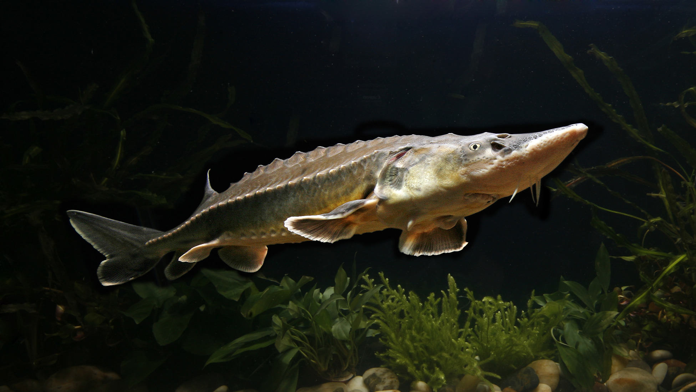
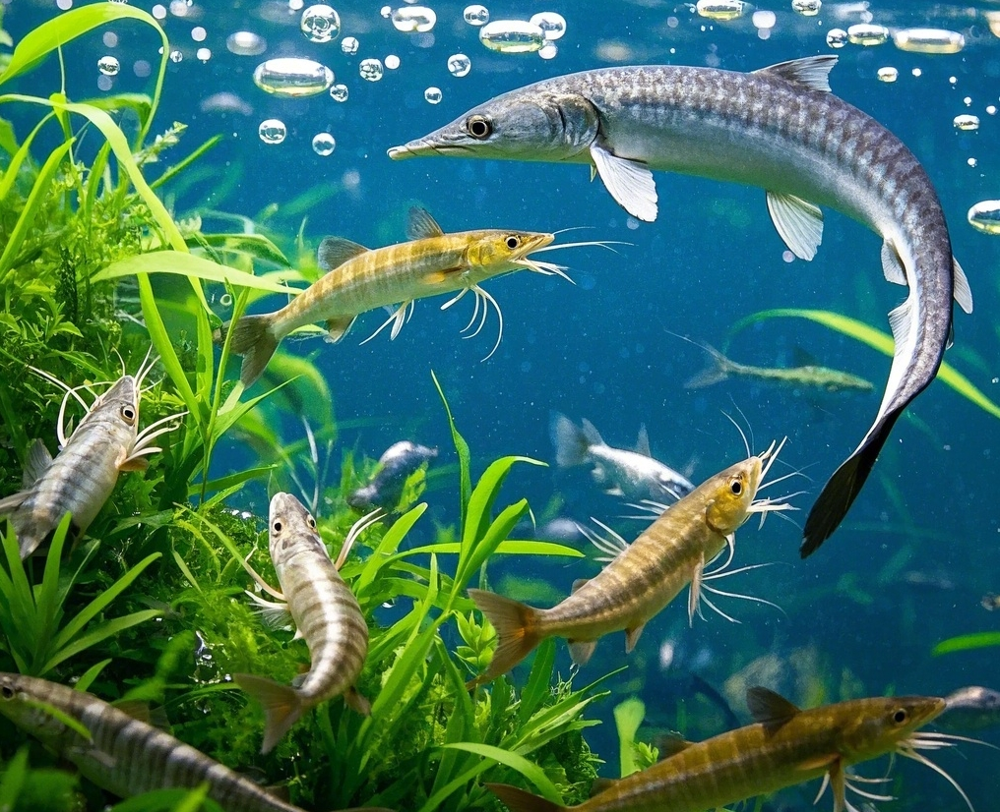
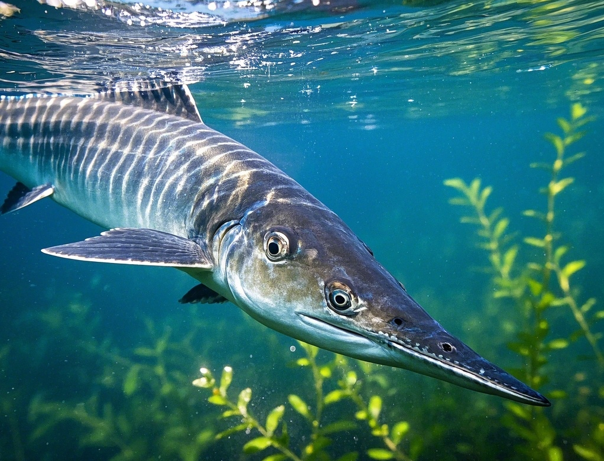
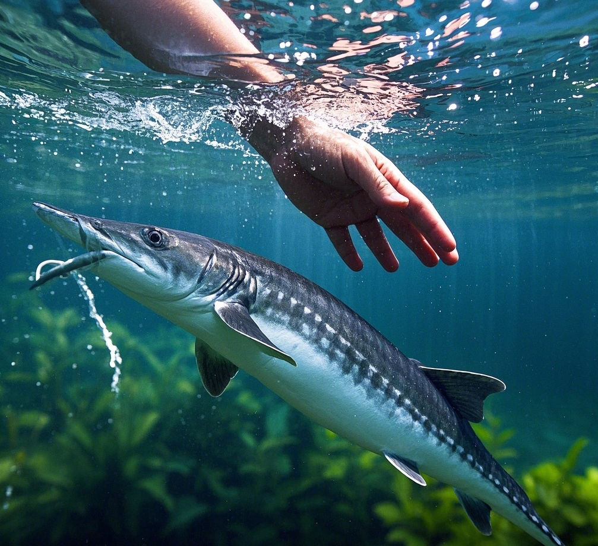

简介
中华鲟（学名：Acipenser sinensis），属鲟形目、鲟科、鲟属的一种硬骨鱼类。中华鲟是中国特有的古老珍稀鱼类，也是世界现存鱼类中最原始的种类之一，有着“水中大熊猫”之称。它身体呈长梭形，头尖吻长，口前有4条吻须，口位在腹面，体被5行骨板，背部一行，体侧和腹侧各两行。中华鲟是大型洄游性鱼类，具有海河洄游的习性，成熟的中华鲟亲鱼每年秋季从海洋洄游至长江上游产卵繁殖。
栖息地
中华鲟主要栖息于长江干流及河口附近，在海洋中生长发育，性成熟后洄游至长江上游产卵。它们喜欢在水流较缓、水深且底质多为泥沙或卵石的河段活动。长江的一些支流、湖泊以及河口的半咸水区域也是它们的重要栖息场所。然而，由于人类活动的影响，如水利工程建设、航运、水污染等，中华鲟的栖息地受到了严重破坏，其生存空间不断缩小。
饮食
中华鲟是底栖鱼类，以底栖无脊椎动物及小型鱼类为食。其食物种类包括虾蟹类、端足类、蚬类、蚌类、鱼类等。在不同的生长阶段，中华鲟的食性会有所变化。幼鱼在长江中、上游江段主要以摇蚊幼虫、蜻蜓幼虫等水生昆虫及寡毛类、小型鱼虾等为食；成鱼在海洋中主要以鱼类和头足类等为食。
保护
中华鲟被列为国家一级保护动物，由于过度捕捞、栖息地破坏、洄游通道受阻等原因，其种群数量急剧减少。为了保护中华鲟，中国采取了一系列措施，如建立中华鲟自然保护区，加强对其栖息地的保护和管理；实施禁渔期、禁渔区制度，限制捕捞强度；开展人工增殖放流活动，增加种群数量；加强科学研究，深入了解中华鲟的生物学特性和生态习性，为保护工作提供科学依据。同时，国际社会也对中华鲟的保护给予了高度关注，通过国际合作共同推动中华鲟的保护工作。
